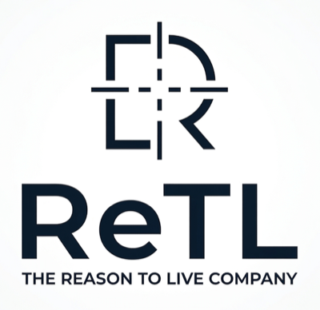

OFFICE OF SECRETARY DANIEL GOH // MPP
Greater Kuching Intelligent Operation Center
In collaboration with depa, PMUA, Axiom, ReTL, Thailand Smart City Office & ASCN
LIGHT
EN
BM
CN
BOARD //
SYNC //
Waiting for payload and snapshot metadata...
PAYLOAD // --
SYS: OPERATIONAL

INTEL RAIL
Synchronising...
DELTA //
ACT NOW
NEXT 6H
BLIND SPOTS
Radar // Greater Kuching
Scanning sectors...
MUNICIPAL GOVERNANCE
Locality Explorer // Padawan
ECONOMIC INTELLIGENCE
Economy + Ground Pulse
HUMAN LENS
Scene Read
What A Human Notices
Field Checks
Qualitative Sources
Ground Truth
Source Stack